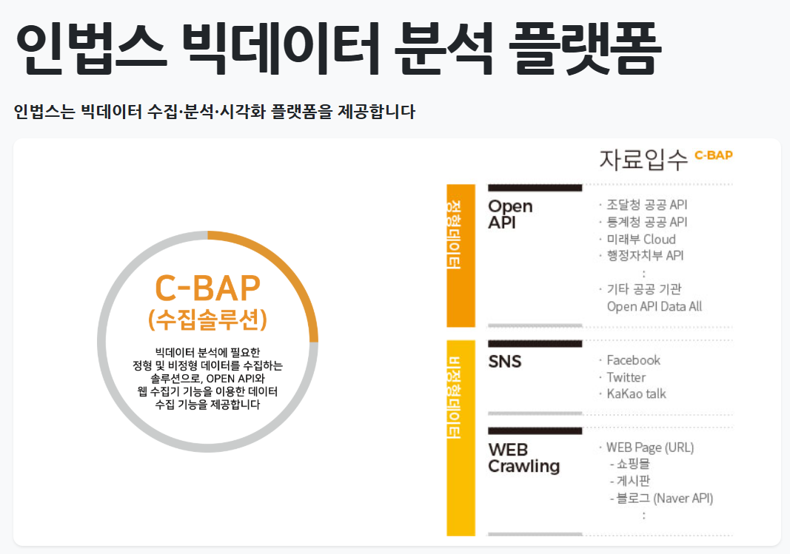
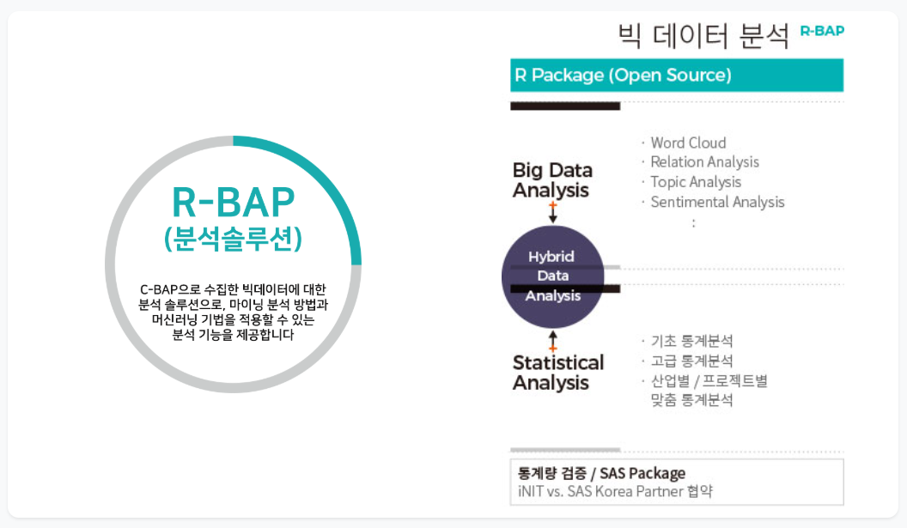
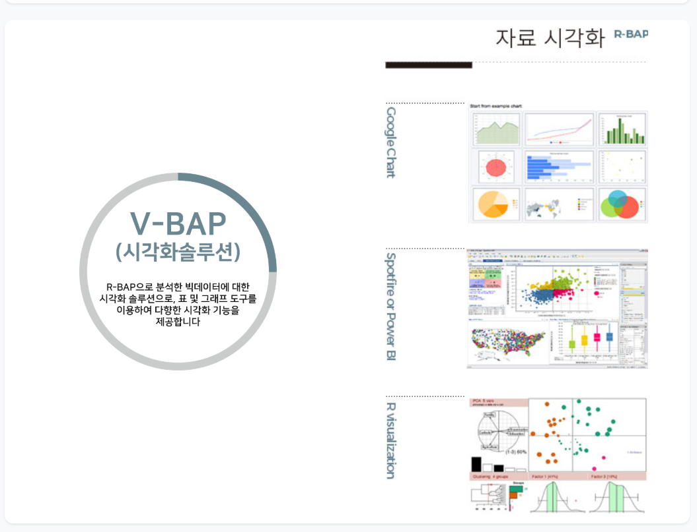

PRODUCT PORTFOLIO
서로 다른 업무를 위한
세 가지 제품.
데이터 품질, 데이터 활용과 설문 운영은 필요한 절차와 사용자가 다릅니다. 각 제품의 실제 업무 흐름과 화면을 기준으로 적용 범위를 확인할 수 있습니다.
DATA QUALITY PLATFORM↗
인뎁스 IN-DEPS
INIT-Data Editing Platform System데이터의 구조와 관계를 분석해 품질 규칙 후보를 발견하고, 담당자의 검토와 운영 반영까지 추적합니다.
BIG DATA PLATFORM↗
인법스 IN-BAPS
INIT-Bigdata Analysis Platform SystemC-BAP으로 데이터를 수집하고, R-BAP 분석을 거쳐 V-BAP 시각화로 업무 목적에 맞게 전달합니다.



SURVEY OPERATIONS PLATFORM↗
인서베이원 inSurveyOne
One-Stop Survey Integrated Platform문항과 템플릿, 대상자와 배포 준비, 응답 데이터와 결과 보고서를 하나의 작업공간에서 연결합니다.
FROM PURPOSE TO OPERATION
제품보다 먼저 확인할
세 가지 운영 조건.
세 제품을 하나로 묶어 설명하지 않습니다. 해결할 목적과 참여자, 반복 운영에 필요한 기록을 먼저 확인해 알맞은 범위를 정합니다.
- 01 / DEFINE목적과 기준을 먼저 정의
품질 검토, 데이터 활용 또는 조사 운영에서 무엇을 결정하고 어떤 결과를 남길지 확인합니다.
- 02 / CONNECT데이터·사람·절차를 연결
입력 데이터와 담당자, 검토·배포·분석 절차가 끊기지 않도록 필요한 접점을 구성합니다.
- 03 / OPERATE권한·이력·결과를 운영
누가 무엇을 수행했고 어떤 결과가 만들어졌는지 다음 실행에서도 확인할 수 있게 관리합니다.
SOLUTION CONVERSATION
현재 데이터와 업무에
맞는 시작점을 찾으세요.
데이터 소스, 검증·조사 절차와 원하는 운영 범위를 알려주시면 제품 적용과 구축 범위를 함께 정리하겠습니다.
솔루션 도입 상담하기